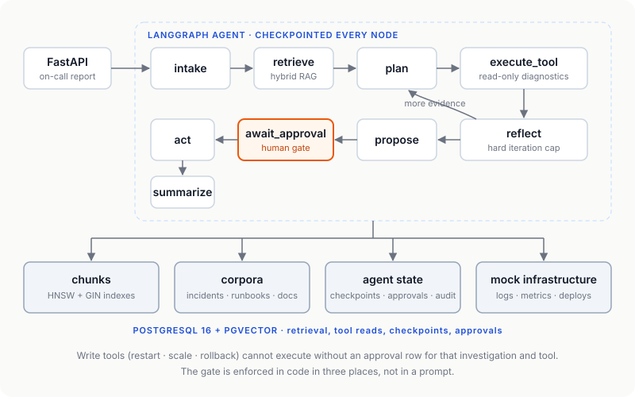

01Motivation
Why I built it
Most agent demos skip the parts that matter in production: what happens when the process dies mid-investigation, what stops the model from restarting a service on its own, and whether anyone measured it. I built IncidentIQ around those three questions.
- Durable state: the graph checkpoints after every node, so an investigation survives a crash and resumes.
- Structural safety: write actions are gated in code, not by prompt wording.
- Real evaluation: a harness that produces numbers, including bad ones.
02Design
Architecture
A bounded reasoning loop. plan → execute_tool → reflect has a hard iteration cap enforced in control flow. A model that always says "keep going" still terminates.
Retrieval after every tool call. Retrieval on the bare on-call report scores Recall@5 0.461; enriched with the error signatures the tools surface, it scores 0.800. So retrieving again is worth an iteration.
An approval gate in three places: a tool-class attribute the graph reads, LangGraph's interrupt_before with a checkpoint written, and a runtime check that refuses to run without an approval row naming that investigation and tool.
Approved actions run once. The client retries with the approval id as an Idempotency-Key; the control plane replays its first response to every retry, including after a crash between the action and the checkpoint.

Scroll the diagram sideways on a phone, or tap it to open it full size.
Around the agent: a FastAPI service with viewer and approver API keys, a React/TypeScript UI with a live timeline over server-sent events, OpenTelemetry traces that follow an investigation across threads and HTTP (viewable in Jaeger or Langfuse), Prometheus metrics, and an MCP server that exposes only the read-only diagnostic tools.
03Measured
Results
| Recall@5 (capped) | 0.800 |
|---|---|
| Recall@5 (uncapped) | 0.608 |
| Hit@5 | 0.917 |
| MRR | 0.917 |
| Median latency | 28.7 ms |
| Task completion (target ≥ 90%) | 70.0% |
|---|---|
| Abstention accuracy | 100% |
| Tool execution success | 80.7% · 31 calls |
| Recovery after injected failure | 50% |
| Median / p95 latency | 108 s / 157 s |
| Groundedness | not yet scored |
Hybrid retrieval: pgvector cosine plus Postgres full-text, fused with weighted reciprocal rank fusion over bge-small embeddings. The agent sample runs a local 14B model at a 3-iteration cap, so completion is a lower bound; one scenario is ten points. Groundedness stays unscored until the judge is calibrated.
04Evaluation
Fix the measurement before the agent
Earlier runs scored 40% and then 50%. Before changing the agent, I read the failing cases end to end, and several failures were the harness, not the model. It had been approving arguments the approval API refuses, grading against one narrative per failure mode word for word, planting metric anomalies that hourly averages hid, and letting sampling alone move the score ten points.
With those fixed, the same agent scored 70%. Three agent changes, measured one at a time on the same harness, scored 70%, 80% and 70%. The third costs a scenario on purpose: the agent may no longer propose an action on a service whose own logs and metrics show nothing abnormal, after it once applied a past incident's fix to a healthy service.
Every abstention scenario passes, and the remaining misses are listed by kind in the repository, not averaged away.
05Findings
Engineering findings
JSON mode guarantees syntax, not schema
Past ~3k prompt tokens the model returned valid JSON with the wrong keys, so every field parsed as empty. Fixed with grammar-constrained decoding from a JSON Schema, then again by adding a required array.
Retry classification beats retry count
An unknown service name was treated as transient, so retries burned the whole budget. Argument errors now stop the loop and return a correction ("Did you mean: checkout-service?") via trigram similarity.
Error text is prompt
A validator said a version "should look like 'v1.2.3'", and the agent then proposed rolling back to v1.2.3 on a service deployed at v2.27.x.
Hybrid retrieval needs real identifiers
Hybrid only helped once incident write-ups contained the actual error tokens (HikariPool, x509). Its value: holding Recall@5 at 0.800 without a service filter, while vector-only drops to 0.728.
06Status
Built and tested
- All seven planned phases are complete: corpora and mock infrastructure, hybrid retrieval, the LangGraph agent and evaluation harness, the approval API and audit trail, the web UI, tracing and metrics, and the MCP server.
- 695 backend tests and 23 frontend tests. CI runs the backend against Postgres with pgvector, and the web app's typecheck, tests and build, on every push.
- Tests crash a run mid-investigation and resume it, retry approved actions against injected faults, and check that MCP clients can never reach a write tool.
Not done yet: groundedness scoring with a calibrated judge, and the full 100-scenario suite at full budget.